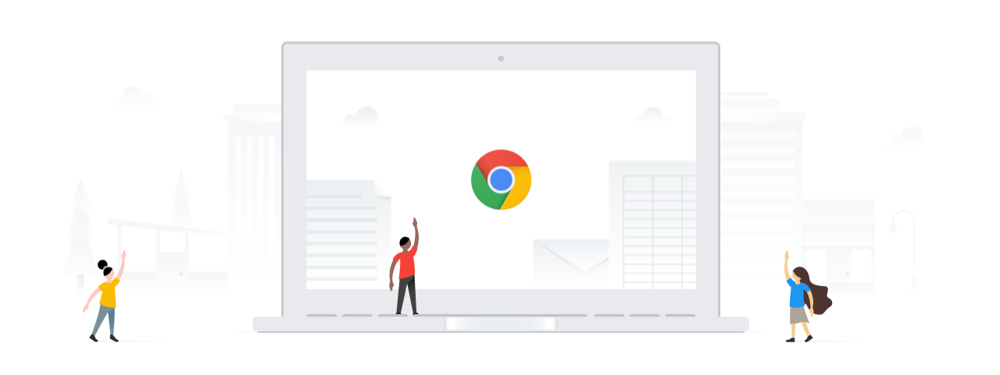

<!-- Copyright 2016 The Chromium Authors. All rights reserved.
     Use of this source code is governed by a BSD-style license that can be
     found in the LICENSE file. -->

<link rel="import" href="chrome://resources/polymer/v1_0/iron-flex-layout/classes/iron-flex-layout.html">
<link rel="import" href="chrome://resources/polymer/v1_0/paper-styles/color.html">

<!--
  OOBE Welcome screen
-->
<dom-module name="oobe-welcome-dialog">
  <template>
    <link rel="stylesheet" href="oobe_dialog_host.css">
    <link rel="stylesheet" href="oobe_welcome_dialog.css">
    <div class="layout horizontal flex">
      <div class="vertical-margin"></div>
      <div class="welcome-content flex layout vertical center">
        <h1 id="title" i18n-content="networkScreenGreeting"></h1>
        <!-- TODO(alemate): Display images depending on screen ppi. -->
        
        <div class="flex"></div>
        <div id="buttons" class="layout horizontal center">
          <oobe-welcome-secondary-button icon="icons:language"
              on-tap="onLanguageClicked_">
            <div>[[currentLanguage]]</div>
          </oobe-welcome-secondary-button>
          <oobe-welcome-secondary-button icon="icons:accessibility"
              on-tap="onAccessibilityClicked_">
            <div i18n-content="accessibilityLink"></div>
          </oobe-welcome-secondary-button>
          <div class="flex"></div>
          <oobe-text-button inverse on-tap="onNextClicked_">
            <div i18n-content="welcomeNextButtonText"></div>
          </oobe-text-button>
        </div>
        <div id="bottom-margin"></div>
      </div>
      <div class="vertical-margin"></div>
    </div>
  </template>
</dom-module>
